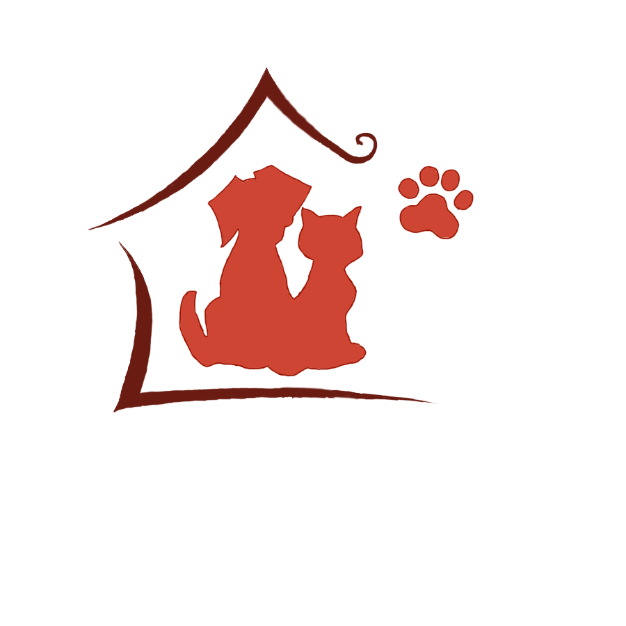

Здесь, за невысоким забором, живут более сотни собак и кошек. У каждого своя история, но начало у всех печальное: брошенные на трассе, выброшенные из дома за ненадобностью или потерявшиеся в суете мегаполиса. В этом приюте животные проходят восстановление и лечение. Так же прийти и навестить животных, они всегда рады гостям и готовы дарить свою любовь вам!!